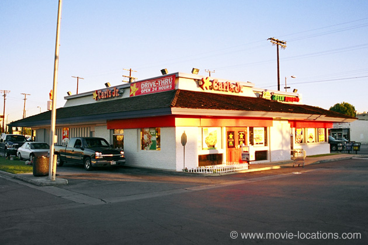

American Beauty
Main Content

Although apparently set in the ‘Chicago’ suburbs, Sam Mendes’ Oscar winning drama was shot in California. The aerial shots of the neat, bland checquerboard neighbourhood are the suburbs of California state capital, Sacramento, as are the streets along which Lester Burnham (Kevin Spacey) and his neighbours jog.
The Burnham home, though, as well as the house of the Fitts next door, completely reverses the usual practice, by filming exteriors at the studio, and interiors on practical locations.
The very specific sightlines needed for the characters to peer into each others’ lives, determined that the houses needed to be precisely configured.
Two adjacent houses on the Warner Ranch (formerly the Columbia Ranch), 411 North Hollywood Way in Burbank, were rebuilt to suit the needs of the script. They stand on the ranch’s Blondie Street – built for Columbia’s serialisation of the Blondie Bumstead cartoon strip in the Thirties. Sharp-eyed movie watchers might recognise the street as Danny Glover’s neighborhood from the Lethal Weapon films and the site of the Griswald family home in National Lampoon’ s Christmas Vacation. Unlike the main Warner’s Burbank studio, the Ranch is not open for tours.
But, although the respective interiors were filmed in real houses, and in truly swanky neighbourhoods, they were several miles apart.
The Burnham household was filmed in 11388 Homedale Street, at Beloit Avenue, in Brentwood just west of UCLA.
Colonel Fitts’ ‘next door’ house is is in midtown’s Hancock Park district, at 330 South Windsor Boulevard, between West 3rd and West 4th Streets.
The school where Lester Burnham lusts after his daughter’s friend Angela (Mena Suvari) is a blending of two establishments to the south of the city: South High School, 4801 Pacific Coast Highway, Torrance, in LA’s South Bay area; and Long Beach Polytechnic High School, 1600 Atlantic Avenue in Long Beach.
But you’ll need to head to the north of Los Angeles, in the San Fernando Valley, to grab a bite at ‘Mr Smiley’, where Lester (“I think you'll remember me this time”) gets a job serving up burgers.
It’s actually a branch of Carl’ s Jr / Green Burrito, 20105 Saticoy Street, in Canoga Park.
Visit Info
Visit The Film Locations
California | Los Angeles
Visit: Los Angeles
Flights: Los Angeles International Airport (LAX), 1 World Way, Los Angeles, CA 90045 (tel: 424.646.5252)
Travelling around: Los Angeles Metro